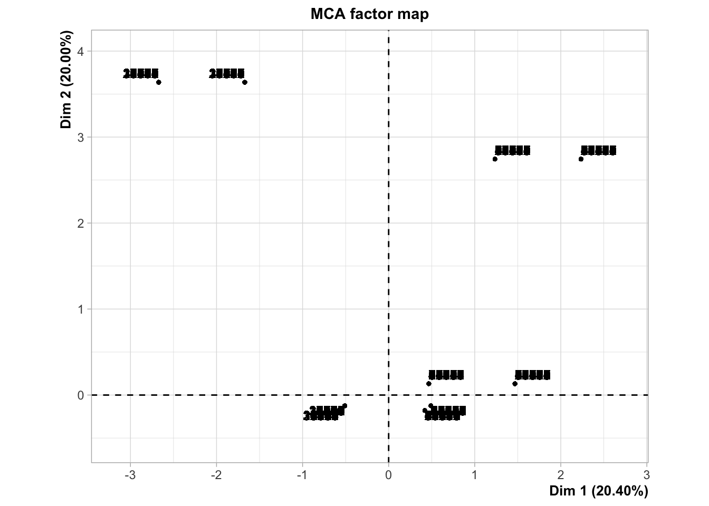
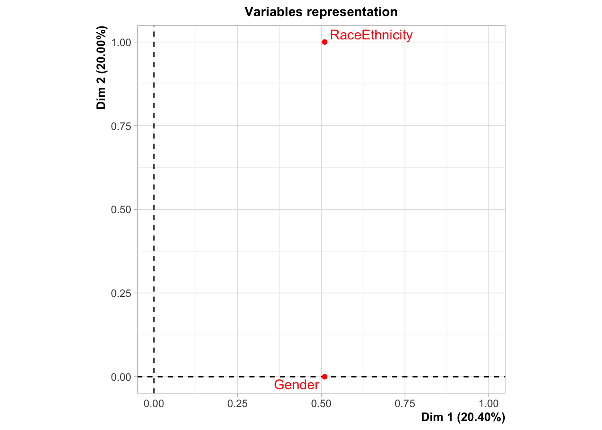
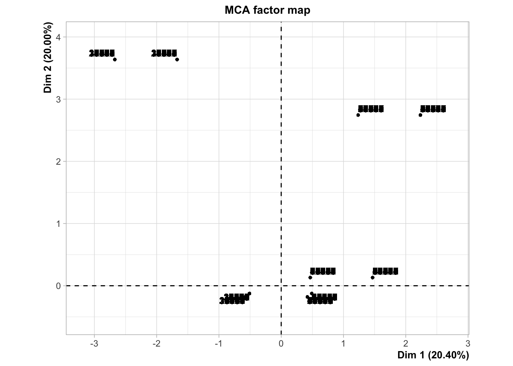
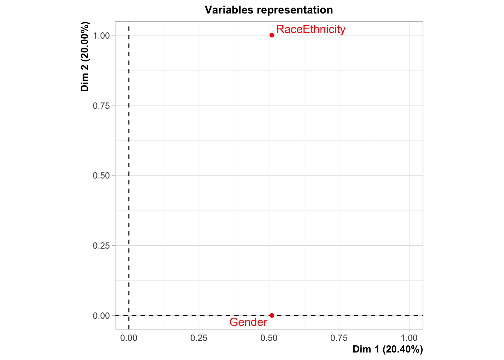

Analysis - multiple correspondance analysis
The purpose of multiple correspondence analysis is to examine any patterns among the independent variables with the goal of eliminating variables that are redundant - essentially two variables that are explaining the same thing. This type of analysis is not meant to confirm any predictions, but rather explore the data and make decisions on what data should be included in the prediction model.
Independent variables
The master dataset is composed of 38,154 rows. Each row represents an individual that graduated (StatusEnd = 8 or 9) from a high school located in EDR 6W, EDR 6E, and EDR 8 between 2008 and 2019.
The master dataset is also composed of 101 columns. Columns mainly represent various socio-economic, demographic, and educational career characteristics of the indivdual as well as a few characteristics of the high school geographic from which they graduated (i.e. county unemployment). The variables for each individual is composed of a mix of categorical and numerical values. In this analysis, we will only be exploring categorical data.
Here is a list of all the categorical variables with a description of each.
- Demographics
- Grad year: this is a value representing each year starting with 1 representing 2008 and 12 representing 2019.
- Gender:
- M = male
- F = female
- RaceEthnicity:
- AI = American Indian
- Asian/PI = Asian or Pacific Islander
- Black = African American
- Hispanic = any race any Hispanic or Latino
- Unknown = unknown race or ethnicity
- White = Caucuasian and not hispanic
- High school characteristics
- Dem_Desc: the RUCA category of the high school from which the individual graduated.
- edr: the EDR of the high school from which the individual graduated.
- High school enrollment
- LimitedEnglishProficiencyIndicator:
- Y = identified as having limited english proficiency at some point between 10th and 12th grade, otherwise N.
- HomelessIndicator:
- Y = the individual was identified as homeless at any point between 10th and 12th grade, otherwise N.
- economic.status:
- 1 = the individual was eligible for free or reduced lunch (codes 1,2,4,5) at any point between 10th and 12th grade, otherwise 0.
- pseo.participant:
- 1 = the individual participated in a PSEO course sometime between 10th and 12th grade, otherwise 0.
- SpecialEdStatus:
- 1 = the individual required special education services at some point between 10th and 12th grade, otherwise 0.
- non.english.home:
- 1 = the individual was identifed as having English as not the primary langauge spoken at home between 10th and 12th grad, otherwise 0.
- english.learner:
- 1 = the individual was identified as an “english learner” at least one time between 10th and 12th grade, otherwise 0.
- LimitedEnglishProficiencyIndicator:
- High school accomplishments
- took.ACT: whether an indiviual took the ACT exam
- Yes
- No
- ap.exam:
- 1 = the individual took an AP exam at some point,
- 0 = the individual did not take an AP exam.
- cte.achievement: three indicators with
- “CTE concentrator or completor” being one,
- “CTE participant” meaning they took a CTE course but was not a concentrator or completor, and,
- “No CTE” meaning they didn’t take a CTE course
- sat.taken:
- 1 = individual took the SAT at some point between 10th and 12th grade, otherwise 0.
- took.ACT: whether an indiviual took the ACT exam
- Post-secondary
- attended.ps:
- Yes = the individual attended a post-secondary education institution, otherwise No.
- ps.grad: whether the indiviual graduated from a post-secondary institution
- ps.grad.InstitutionSector: the institution sector of the
post-secondary school from which an individual has graduated.
- 1 - Public, 4-year or above
- 2 - Private not-for-profit, 4-year or above
- 3 - Private for-profit, 4-year or above
- 4 - Public, 2-year
- 5 - Private not-for-profit, 2-year
- 6 - Private for-profit, 2-year
- 7 - Public, less-than 2-year
- 8 - Private not-for-profit, less-than 2-year
- 9 - Private for-profit, less-than 2-year
- 10 - multiple sectors (if attended multiple institutions)
- 99 - Sector unknown (not active)
- “Never attended ps” = the individual never attended a post-secondary institution
- “Did not grad” = the individual attended a post-secondary institution but did not graduate.
- highest.cred.level: an identifier of the highest credential
earned by the PersonID. The categories are;
- Less than associate degree
- Associate degree
- Bachelors degree
- Higher than bachelors degree.
- attended.ps:
Frequencies
First, lets check to see there aren’t any variable categories with very low frequencies which can distort the analysis.
The tables below shows there are a few to be concerned about.
- HomelessIndicator: There are only 161 individuals in the dataset that were confirmed homeless compared to 37,993 individuals that were never confirmed homeless.
- LimitedEnglishProficiency: There are only 805 individuals that were ever confirmed as having limited english proficiency compared to 37,349.
- grad.InstitutionSector: there very few individuals that graduated from a post secondary institution categorized as 5, 6, 7, 8 and 9.
- RaceEthnicity: ther are only a 399 students categorized as American Indian and only 40 categorized as Unknown.
- SAT.taken: Only 237 students who took the ACT.
Due to these low frequencies, I’m going to do the following;
- HomelessIndicator: eliminate from analysis
- LimitedEnglishProficiency: Keep for now
- grad.InstitutionSector: combine categories 5,6,7,8 and 9 into one
category. This means that the following institution sectors will be
relabeled as “11”;
- 5 - Private not-for-profit, 2-year
- 6 - Private for-profit, 2-year
- 7 - Public, less-than 2-year
- 8 - Private not-for-profit, less-than 2-year
- 9 - Private for-profit, less-than 2-year
- RaceEthnicity: Keep for now
- SAT.taken: eliminate from analysis.
MCA analysis
Let’s check MCA.
 

## **Results of the Multiple Correspondence Analysis (MCA)**
## The analysis was performed on 38154 individuals, described by 18 variables
## *The results are available in the following objects:
##
## name description
## 1 "$eig" "eigenvalues"
## 2 "$var" "results for the variables"
## 3 "$var$coord" "coord. of the categories"
## 4 "$var$cos2" "cos2 for the categories"
## 5 "$var$contrib" "contributions of the categories"
## 6 "$var$v.test" "v-test for the categories"
## 7 "$ind" "results for the individuals"
## 8 "$ind$coord" "coord. for the individuals"
## 9 "$ind$cos2" "cos2 for the individuals"
## 10 "$ind$contrib" "contributions of the individuals"
## 11 "$call" "intermediate results"
## 12 "$call$marge.col" "weights of columns"
## 13 "$call$marge.li" "weights of rows"Eigenvalues
The eigenvalues measure the amount of variation retained by each principle component. This will help us determine how many principle components to be considered.
The values below indicate that the first dimension explains just over 10% of the variation with the next few dimensions explaining an additional 5%. After about dimension 4, each subsequent dimension explains an additional 2% to 4% of the variable until about dimension 32 where each dimension explains additional 1% of the variance.
## eigenvalue variance.percent cumulative.variance.percent
## Dim.1 2.419917e-01 1.012988e+01 10.12988
## Dim.2 1.302124e-01 5.450752e+00 15.58064
## Dim.3 1.112846e-01 4.658424e+00 20.23906
## Dim.4 1.015450e-01 4.250719e+00 24.48978
## Dim.5 7.970702e-02 3.336573e+00 27.82635
## Dim.6 7.311924e-02 3.060805e+00 30.88716
## Dim.7 6.817242e-02 2.853729e+00 33.74089
## Dim.8 6.448975e-02 2.699571e+00 36.44046
## Dim.9 6.268331e-02 2.623953e+00 39.06441
## Dim.10 6.049556e-02 2.532372e+00 41.59678
## Dim.11 5.967973e-02 2.498221e+00 44.09500
## Dim.12 5.872324e-02 2.458182e+00 46.55319
## Dim.13 5.753189e-02 2.408312e+00 48.96150
## Dim.14 5.683447e-02 2.379117e+00 51.34062
## Dim.15 5.662004e-02 2.370141e+00 53.71076
## Dim.16 5.602894e-02 2.345398e+00 56.05615
## Dim.17 5.579665e-02 2.335674e+00 58.39183
## Dim.18 5.568855e-02 2.331149e+00 60.72298
## Dim.19 5.561160e-02 2.327927e+00 63.05090
## Dim.20 5.538764e-02 2.318552e+00 65.36946
## Dim.21 5.519185e-02 2.310357e+00 67.67981
## Dim.22 5.441601e-02 2.277880e+00 69.95769
## Dim.23 5.410721e-02 2.264953e+00 72.22265
## Dim.24 5.369278e-02 2.247605e+00 74.47025
## Dim.25 5.316199e-02 2.225386e+00 76.69564
## Dim.26 5.172177e-02 2.165097e+00 78.86073
## Dim.27 5.068901e-02 2.121866e+00 80.98260
## Dim.28 4.853321e-02 2.031623e+00 83.01422
## Dim.29 4.776277e-02 1.999372e+00 85.01359
## Dim.30 4.616294e-02 1.932402e+00 86.94600
## Dim.31 4.378137e-02 1.832708e+00 88.77870
## Dim.32 4.177556e-02 1.748744e+00 90.52745
## Dim.33 3.781652e-02 1.583017e+00 92.11047
## Dim.34 3.486857e-02 1.459615e+00 93.57008
## Dim.35 3.325315e-02 1.391992e+00 94.96207
## Dim.36 3.134446e-02 1.312093e+00 96.27417
## Dim.37 2.696281e-02 1.128676e+00 97.40284
## Dim.38 2.328171e-02 9.745831e-01 98.37742
## Dim.39 2.267549e-02 9.492066e-01 99.32663
## Dim.40 1.151830e-02 4.821616e-01 99.80879
## Dim.41 4.354416e-03 1.822779e-01 99.99107
## Dim.42 2.133143e-04 8.929434e-03 100.00000
## Dim.43 4.251742e-26 1.779799e-24 100.00000A visualization of variation explained by each dimension is below.

Correlation between variables and principle dimensions
Let’s take a look to see which variables are going to be important. The chart below shows that the variables related to post-secondary education are highly correlated with the first dimension while the variables related to race/ethnicity and whether english is spoken is correlated with dimension 2.

Coordinates of variable categories
This is too busy to interpret well, but there are a few things worth mentioning. The race/ethnicy and english language variables continue to stand out. Having limited english proficiency as well as being an englih learner, and being non-white all have opposing impacts to their related categories for each variable. Regarding post-secondary education variables, having limited no or limited post-secondary experience is in an opposing quadrant to it’s related categories. For example, never attending post-secondary is in opposition to attended post-secondary. As well as having earned a masters or bachelor’s degree.

Quality of representation
So far, we’ve only looked at the first two dimensions which only explain 15% of the variance. The quality of representation will help us assess the degree of association between variable categories and a particular axis. If the variable is well represented by two dimensions, the sum of COS2 is close to one. For some of the row items, more than 2 dimensions are required to perfectly represent the data.
Due to the high number of varaiable categories present in the data, I will use color to help decipher which ones have high cos2.
- variable categories with low cos2 values will be colored in “white”
- variable categories with mid cos2 values will be colored in “blue”
- variable categories with high cos2 values will be colored in “red”
From the table below, we can see that the variable categories with high cos2 are;
- non.english.home
- Less than Associate Degree
- ps_grad
- english.learner
- Bachelor degree

Let’s turn this into a bar plot to better visualize all of these. Since we know, according to the eigenvalues, that the first few dimensions only represent 20% of the variance, and each subsequent dimension adds only explains a bit more variance, it’s likely that it will take numerous dimensions to explain a sufficient amount of our variance. Therefore, we will graph visualize the quality of representation up to the max number of dimensions allowed - 5.
The following variables and their respective categories are identified by the following Cos2 grouping;
Above 75%
- ps.grad:
- 1
- 0
- highest.cred.level
- Bachelor degree
- attended.ps
- Yes
- No
- ps.grad.InstitutionSector
- Never attended ps

Let’s check the contributions to dimensions 1 through 5.
The following variable categories contribute the most to dimension 1.
- ps.grad.InstitutionSector
- never attended ps
- 1
- attended.ps
- No
- highest.cred.level
- Bachelor’s degree
- Less than associate degree
- ps.grad
- Yes
- No
- took.ACT
- No
- non.english.home
- 1
- english.learner
- 1

The largest contributors to dimension 2 are;
- non.english.home
- 1
- LimitedEnglishProficiencyIndicator
- Yes
- english.learner
- 1
- Race/Ethnicity
- Hispanic
- Asian/PI

For dimension 3, the largest contributors are;
- ps.grad.InstitutionSector
- 4
- Did not grad
- highest.cred.level
- Associate degree
- ap.exam
- 1
- ps.grad
- 1
- 0
- pseo.participant
- 1
- took.act
- No
- cte.achievement
- Concentrator or completor
- No CTE

The largest contributors to dimension 4 are;
- ps.grad.InstitutionSector
- Did not grad
- Never attended ps
- 1
- 4
- attended.ps
- No
- highest.cred.level
- Bachelors degree
- Associate degree

The largets contributor sto dimension 5 are;
- Dem_Desc
- Urban/town/rural mix
- EDR
- EDR 6W
- EDR 6E
- highest cred.level
- Associate degree
- ps.grad.InstitutionSector
- 1

Summary
So out of all this, it seems the following variables are the most important regarding the amount of variation explained;
- ps.grad.InstitutionSector
- never attended ps
- 1 - Public, 4-year or above
- 4 - Public, 2-year
- did not grad
- attended.ps
- No
- highest.cred.level
- Bachelor’s degree
- Less than associate degree
- associate degree
- ps.grad
- Yes
- No
- took.ACT
- No
- non.english.home
- 1 - yes
- english.learner
- 1 - yes
- LimitedEnglishProficiencyIndicator
- Yes
- Race/Ethnicity
- hispanic
- Asian/PI
- ap.exam
- 1 - yes
- pseo.participant
- 1 - yes
- cte.achievement
- Concentrator or completor
- No CTE
- Dem_Desc
- Urban/town/rural mix
- edr
- EDR 6E
- EDR 6W
Color individuals by group
Below is the individuals. Not sure how to interpret this.